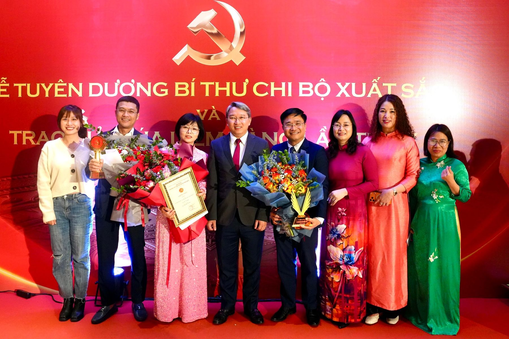
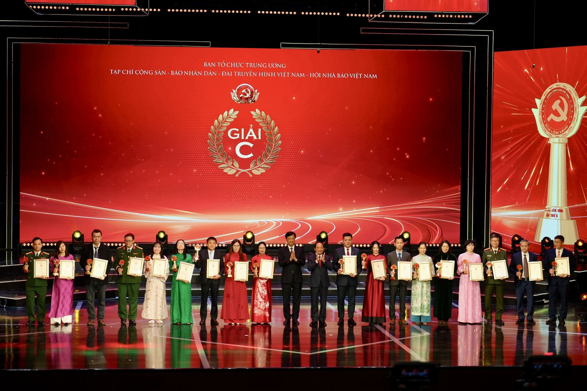

![Báo Pháp luật Việt Nam]()

Báo Pháp luật Việt Nam đạt giải C Giải Búa liềm vàng lần thứ X - năm 2025
(PLVN) – Tại Lễ tuyên dương Bí thư Chi bộ xuất sắc và công bố, trao Giải Búa liềm vàng lần thứ X - năm 2025, Báo Pháp luật Việt Nam vinh dự đạt Giải C với loạt bài 5 kỳ “Sức mạnh lòng dân - Nền tảng vững chắc của mọi thắng lợi” của nhóm tác giả Hà Ánh Bình, Phó Tổng Biên tập Báo Pháp luật Việt Nam và Lương Thị Vân Anh, Phó Trưởng Ban Ban Thời sự - Nội chính.

Lễ tuyên dương Bí thư Chi bộ xuất sắc và công bố, trao Giải Búa liềm vàng lần thứ X - năm 2025 do Ban Tổ chức Trung ương chủ trì, phối hợp với Tạp chí Cộng sản, Báo Nhân Dân, Đài Truyền hình Việt Nam, Hội Nhà báo Việt Nam tổ chức tối 3/2, tại Nhà hát Hồ Gươm (Hà Nội), nhân dịp kỷ niệm 96 năm Ngày thành lập Đảng Cộng sản Việt Nam, mừng Đảng, mừng đất nước và chào đón Xuân mới Bính Ngọ 2026.
Đây là hoạt động có ý nghĩa chính trị sâu sắc kỷ niệm 96 năm Ngày thành lập Đảng Cộng sản Việt Nam và chào mừng thành công Đại hội lần thứ XIV của Đảng.
Tham dự buổi Lễ có Tổng Bí thư Tô Lâm; nguyên Tổng Bí thư Nông Đức Mạnh; Ủy viên Bộ Chính trị khóa XIII, Thủ tướng Chính phủ Phạm Minh Chính; Ủy viên Bộ Chính trị, Chủ tịch Quốc hội Trần Thanh Mẫn; nguyên Chủ tịch Quốc hội Nguyễn Sinh Hùng; nguyên Chủ tịch Quốc hội Nguyễn Thị Kim Ngân; Ủy viên Bộ Chính trị, Thường trực Ban Bí thư Trần Cẩm Tú; Ủy viên Bộ Chính trị, Bí thư Trung ương Đảng, Trưởng Ban Tổ chức Trung ương Lê Minh Hưng cùng các Ủy viên Bộ Chính trị, Ban Bí thư, Ủy viên TƯ Đảng, Ủy viên dự khuyết TƯ Đảng cùng các đại biểu khách quý. Đặc biệt là sự có mặt của 96 Bí thư Chi bộ xuất sắc và các tác giả, nhóm tác giả đạt giải Giải Búa liềm vàng lần thứ X.
Phát biểu tại buổi Lễ, Tổng Bí thư Tô Lâm nhấn mạnh, trong không khí phấn khởi, tự hào kỷ niệm 96 năm Ngày thành lập Đảng Cộng sản Việt Nam quang vinh, khi toàn Đảng, toàn dân và toàn quân ta hân hoan chào mừng thành công rực rỡ của Đại hội đại biểu toàn quốc lần thứ XIV của Đảng; Lễ tuyên dương Bí thư Chi bộ xuất sắc năm 2026 và trao Giải báo chí toàn quốc về xây dựng Đảng - Giải Búa liềm vàng lần thứ X được long trọng tổ chức.
Thay mặt lãnh đạo Đảng, Nhà nước, Tổng Bí thư gửi tới các đồng chí lãnh đạo, nguyên lãnh đạo Đảng, Nhà nước, các quý vị đại biểu, các Bí thư Chi bộ tiêu biểu và đội ngũ những người làm báo, cùng toàn thể các đồng chí đảng viên, đồng bào lời thăm hỏi thân thiết, lời chúc mừng tốt đẹp nhất.
Ngày 3/2/1930, Đảng Cộng sản Việt Nam ra đời, đánh dấu một bước ngoặt vĩ đại trong lịch sử dân tộc, quyết định con đường giải phóng dân tộc, xây dựng và phát triển đất nước. Trải qua 96 năm lãnh đạo cách mạng, Đảng ta luôn kiên định mục tiêu độc lập dân tộc gắn liền với chủ nghĩa xã hội, không ngừng tự đổi mới, tự chỉnh đốn, nâng cao năng lực lãnh đạo và sức chiến đấu, dẫn dắt đất nước, dân tộc vượt qua muôn vàn khó khăn, thử thách, giành được những thắng lợi to lớn, có ý nghĩa lịch sử.
Đại hội đại biểu toàn quốc lần thứ XIV của Đảng là mốc son mới trong tiến trình 96 năm Đảng lãnh đạo cách mạng Việt Nam. Thành công rất tốt đẹp của Đại hội XIV đã thể hiện khát vọng, niềm tin, ý chí, quyết tâm và tầm nhìn phát triển mới của Đảng và dân tộc ta. Đây là tiền đề vững chắc để toàn Đảng, toàn dân, toàn quân ta bước vào kỷ nguyên mới - kỷ nguyên vươn mình của dân tộc; tự chủ, chiến lược, tự tin, tự cường, tiến mạnh trong kỷ nguyên mới, thực hiện thắng lợi Nghị quyết Đại hội lần thứ XIV, vì một nước Việt Nam hòa bình, độc lập, dân chủ, giàu mạnh, phồn vinh, văn minh, hạnh phúc, vững bước đi lên chủ nghĩa xã hội.
Nhiệm kỳ Đại hội XIII của Đảng đã diễn ra trong bối cảnh tình hình thế giới và khu vực có nhiều biến động nhanh chóng, phức tạp, khó khăn, thuận lợi đan xen. Song, dưới sự lãnh đạo đúng đắn của Đảng, đất nước ta đã giữ vững thế chủ động chiến lược, tăng trưởng kinh tế với tốc độ cao, ổn định chính trị - xã hội được duy trì, quốc phòng - an ninh được bảo đảm, đời sống Nhân dân được cải thiện, vị thế và uy tín quốc tế của Việt Nam không ngừng được nâng cao.
Theo Tổng Bí thư, trong thành tựu đáng tự hào của nhiệm kỳ Đại hội XIII, có sự đóng góp trực tiếp, bền bỉ và hết sức quan trọng của các tổ chức cơ sở đảng, của từng Chi bộ, từng đảng viên và đặc biệt là đội ngũ Bí thư Chi bộ - những người giữ vai trò hạt nhân lãnh đạo ở cơ sở, nơi gần dân nhất, sát thực tiễn nhất. Các Bí thư Chi bộ có vai trò vừa là hạt nhân chính trị trong lãnh đạo, định hướng Chi bộ triển khai thực hiện các nghị quyết của Đảng; vừa là kiến trúc sư trong tổ chức điều hành, phân công nhiệm vụ cho các đảng viên; cùng đồng thời là cầu nối giữa ý Đảng và lòng dân. Uy tín và sức thuyết phục của mỗi Bí thư Chi bộ đối với các đảng viên và quần chúng Nhân dân có được từ sự nêu gương, tiên phong, đổi mới sáng tạo, dám nghĩ, dám làm, dám chịu trách nhiệm, vì lợi ích chung, quyết định đến năng lực lãnh đạo và sức chiến đấu của Chi bộ.
96 đồng chí Bí thư Chi bộ được tuyên dương tại buổi Lễ, đại diện tiêu biểu cho hơn 250.000 Bí thư Chi bộ trong toàn Đảng, thực sự là những tấm gương tiêu biểu, mẫu mực về bản lĩnh chính trị, về đạo đức, về lối sống, có phương pháp lãnh đạo khoa học, sáng tạo, biết gắn công tác xây dựng Đảng với nhiệm vụ chính trị, phát triển kinh tế - xã hội, công tác sản xuất kinh doanh, tạo được sự đoàn kết, thống nhất trong Chi bộ và niềm tin của quần chúng Nhân dân.
Việc lần đầu tiên Trung ương tổ chức Lễ tuyên dương Bí thư Chi bộ xuất sắc thể hiện sự quan tâm đặc biệt của Đảng đối với công tác xây dựng Đảng từ cơ sở, từ hi bộ - nơi trực tiếp triển khai và kiểm nghiệm hiệu quả mọi chủ trương, nghị quyết của Đảng. Lễ tuyên dương không chỉ là sự ghi nhận, tôn vinh xứng đáng đối với những đóng góp bền bỉ, thầm lặng nhưng hết sức quan trọng của đội ngũ Bí thư Chi bộ, mà còn là thông điệp mạnh mẽ về việc đặt trọng tâm xây dựng Đảng từ gốc rễ, khơi dậy niềm tự hào, trách nhiệm và động lực phấn đấu trong toàn đội ngũ cán bộ, đảng viên ở cơ sở, góp phần nâng cao năng lực lãnh đạo và sức chiến đấu của tổ chức Đảng trong giai đoạn mới.
Cũng theo Tổng Bí thư, với nhiệm vụ xây dựng Đảng, công tác thông tin, tuyên truyền có vai trò đặc biệt quan trọng trong việc tạo đồng thuận xã hội, phát huy mạnh mẽ giá trị văn hóa, sức mạnh con người Việt Nam, khơi dậy khát vọng phát triển đất nước phồn vinh, văn minh, hạnh phúc; tăng cường niềm tin của cán bộ, đảng viên và Nhân dân vào sự lãnh đạo của Đảng.
Giải Búa liềm vàng được tổ chức liên tục trong 10 năm qua là một hoạt động có ý nghĩa, góp phần khẳng định vị trí, vai trò của báo chí trong công tác xây dựng Đảng và hệ thống chính trị; lan tỏa sâu rộng những cách làm hay, đổi mới sáng tạo, những điển hình tiên tiến trong việc nhanh chóng đưa Nghị quyết của Đảng vào cuộc sống.
Các tác phẩm tham dự và đoạt Giải Búa liềm vàng năm nay đã phản ánh sinh động, kịp thời những sự kiện, sinh hoạt chính trị, nhiệm vụ quan trọng của Đảng; đi sâu phản ánh những vấn đề thời sự của công tác xây dựng, chỉnh đốn Đảng và hệ thống chính trị; tình hình, kết quả 5 năm thực hiện Nghị quyết Đại hội XIII của Đảng cùng với các nghị quyết Đại hội Đảng bộ các cấp; nhất là việc thực hiện cuộc cách mạng về tổ chức bộ máy của hệ thống chính trị từ Trung ương tới cơ sở, gắn với sắp xếp, điều chỉnh địa giới hành chính; tổ chức mô hình chính quyền địa phương hai cấp. Việc hoàn thiện thể chế về công tác xây dựng Đảng, xây dựng hệ thống chính trị; tiếp tục đổi mới phương thức lãnh đạo của Đảng, nâng cao năng lực tổ chức thực hiện những chủ trương, đường lối của Đảng cùng với nhiệm vụ, giải pháp đột phá trong phát triển kinh tế - xã hội và xây dựng Đảng.
Tổng Bí thư đánh giá cao việc ngày càng có nhiều những tác phẩm đã phát hiện, đề cập tới những bất cập, hạn chế, những vấn đề đặt ra trong công tác xây dựng, chỉnh đốn Đảng; những vấn đề bức xúc, những điểm nghẽn hiện nay và tìm lời giải; tăng cường tính phản biện, tính chiến đấu, tính xây dựng. Nhiều tác phẩm đã thu hút được sự quan tâm của công chúng và góp phần gợi mở, đề xuất các giải pháp thiết thực giúp cho cấp ủy, chính quyền các cấp tháo gỡ những khó khăn, vướng mắc, thúc đẩy sự phát triển, lan tỏa rộng rãi các chủ trương lớn của Đảng, giúp cán bộ, đảng viên và người dân nhận thức đúng, hành động đúng.
Đội ngũ những người làm báo cách mạng đã thực sự hòa mình vào dòng chảy của thực tiễn cuộc sống, thể hiện rõ vai trò truyền bá tư tưởng, đồng hành với những bước đi lớn của Đảng; thúc đẩy niềm tin, trách nhiệm và khát vọng phát triển của mọi tầng lớp Nhân dân. Những đóng góp ấy là thành quả lao động sáng tạo, là minh chứng cho sự trưởng thành vượt bậc về tư duy, kỹ năng, bản lĩnh, trí tuệ và trách nhiệm xã hội của đội ngũ báo chí cách mạng. Phản ánh tinh thần trách nhiệm, sự đồng lòng, chung sức của cả đội ngũ báo chí cách mạng Việt Nam với sự nghiệp xây dựng, phát triển, bảo vệ Tổ quốc, với công tác xây dựng, chỉnh đốn Đảng và hệ thống chính trị.
Thay mặt lãnh đạo Đảng, Nhà nước, Tổng Bí thư ghi nhận, đánh giá cao sự đóng góp to lớn của đội ngũ cấp ủy viên, Bí thư Chi bộ trong toàn Đảng, đội ngũ báo chí trong cả nước thời gian qua. Biểu dương sáng kiến của Ban Tổ chức Trung ương, Văn phòng Trung ương Đảng; sự nỗ lực, cố gắng của Ban Chỉ đạo, Ban Tổ chức Lễ tuyên dương Bí thư Chi bộ xuất sắc và Giải Búa liềm vàng lần thứ X. Tổng Bí thư nhiệt liệt chúc mừng 96 đồng chí Bí thư Chi bộ xuất sắc đã được tuyên dương và các tác giả, tác phẩm được trao Giải Búa liềm vàng lần thứ X cùng các tập thể, cá nhân có nhiều đóng góp cho thành công của Giải báo chí về xây dựng Đảng lần này.

Tổng Bí thư nhấn mạnh, từ năm 2026, Lễ tuyên dương Bí thư Chi bộ xuất sắc sẽ được tổ chức định kỳ hằng năm. Để hoạt động tuyên dương Bí thư Chi bộ xuất sắc phát huy ý nghĩa, các cấp ủy, tổ chức đảng cần quán triệt, nâng cao nhận thức, trách nhiệm về tầm quan trọng của việc nâng cao chất lượng đội ngũ Bí thư Chi bộ; chú trọng tạo điều kiện cho cán bộ, đảng viên và Nhân dân tham gia góp ý xây dựng đội ngũ Bí thư Chi bộ, bảo đảm vai trò hạt nhân và lãnh đạo toàn diện của Đảng ở cơ sở. Từng đồng chí Bí thư Chi bộ phải đổi mới phương thức, phong cách lãnh đạo, lề lối làm việc, nâng cao bản lĩnh chính trị, năng lực hành động, kỹ năng nghiệp vụ công tác đảng, đáp ứng yêu cầu nhiệm vụ trong giai đoạn mới.
Tổng Bí thư đề nghị các cơ quan thông tấn báo chí, các cây bút chuyên nghiệp và không chuyên nghiệp cần tập trung vào các nhiệm vụ trọng tâm của nhiệm kỳ Đại hội XIV. Công tác thông tin, tuyên truyền phải thực sự là “pháo lệnh”, truyền cảm hứng, là “trống trận” cổ vũ toàn Đảng, toàn dân và toàn quân ta phát huy cao nhất tinh thần tự chủ, tự tin, tự lực, tự cường, tự hào dân tộc; thực hiện thắng lợi Nghị quyết Đại hội lần thứ XIV của Đảng.
Các tác phẩm báo chí, nhất là các tác phẩm báo chí viết về xây dựng Đảng cần hiện đại và sáng tạo, phù hợp với sự phát triển thông tin trong kỷ nguyên số; phải là những minh chứng sống động, thể hiện quyết tâm chính trị của các cấp ủy, tổ chức đảng trong tăng cường xây dựng, chỉnh đốn, đổi mới; góp phần để Đảng ta thực sự “là đạo đức, là văn minh”; nâng tầm và nâng cao hiệu lực, hiệu quả lãnh đạo, cầm quyền và sức chiến đấu của Đảng.
Tại buổi Lễ, đồng chí Lê Minh Hưng, Trưởng Ban Chỉ đạo Giải đã phát động Giải báo chí toàn quốc về xây dựng Đảng - Giải Búa liềm vàng lần thứ XI - năm 2026.
Đồng chí Lê Minh Hưng nhấn mạnh, năm 2026 là năm đầu tiên triển khai thực hiện Nghị quyết Đại hội đại biểu toàn quốc lần thứ XIV của Đảng, năm bản lề có ý nghĩa đặc biệt quan trọng, đặt ra những nhiệm vụ lớn, yêu cầu cao, vừa cấp bách vừa mang tính chiến lược lâu dài. Công tác xây dựng, chỉnh đốn Đảng và hệ thống chính trị đứng trước những yêu cầu rất cao, phải thực hiện thật tốt, hiệu quả các nhiệm vụ, giải pháp trọng tâm mà Đại hội XIV của Đảng đã xác định. Đó là tăng cường xây dựng, chỉnh đốn, tự đổi mới để Đảng ta thật sự là đạo đức, là văn minh, nâng tầm và nâng cao hiệu lực, hiệu quả lãnh đạo, cầm quyền và sức chiến đấu của Đảng.
Đồng thời, từ năm 2026, hoạt động tuyên dương Bí thư Chi bộ xuất sắc trong toàn quốc sẽ được tổ chức thường niên, khẳng định sự quan tâm, tin tưởng và kỳ vọng vào đội ngũ các đồng chí Bí thư Chi bộ, những hạt nhân của tổ chức đảng ở cơ sở, là nền tảng xây dựng Đảng trong sạch, vững mạnh từ cơ sở.
Bối cảnh đó yêu cầu các cấp ủy, tổ chức đảng khẩn trương quán triệt, thể chế hóa, cụ thể hóa và tổ chức thực hiện đồng bộ, hiệu quả Nghị quyết Đại hội XIV của Đảng như chỉ đạo của đồng chí Tổng Bí thư Tô Lâm: Làm việc bằng tinh thần nêu gương cao nhất, “nói đi đôi với làm”, “làm đến cùng”, việc vì dân phải làm nhanh, làm đúng, làm tốt bằng năng lực lãnh đạo và tổ chức thực hiện. Mỗi cấp ủy, mỗi tổ chức đảng, mỗi cán bộ, đảng viên, trước hết là Bí thư Chi bộ phải thực sự chuyển từ nhận thức đúng sang hành động hiệu quả, từ quyết tâm chính trị cao sang kết quả cụ thể, rõ ràng. Từng đảng bộ, chi bộ có chương trình hành động gắn với chức năng, nhiệm vụ, phù hợp với thực tiễn của cơ quan, địa phương, đơn vị.
Đồng chí Lê Minh Hưng cũng cho rằng, mỗi nhà báo cần tiếp tục phát huy hiệu quả vai trò cầu nối giữa ý Đảng và lòng dân, để đường lối, chủ trương, nghị quyết của Đảng trở thành thông điệp định hướng, hành động của nhân dân, tạo đồng thuận xã hội và phát huy sức mạnh đại đoàn kết toàn dân tộc.
Thay mặt Ban Chỉ đạo, đồng chí tin tưởng và kỳ vọng các cấp ủy, tổ chức đảng, các đồng chí Bí thư chi bộ, các cơ quan báo chí và đội ngũ các nhà báo sẽ nỗ lực nhiều hơn nữa, đóng góp nhiều hơn nữa để góp phần xây dựng Đảng trong sạch, vững mạnh toàn diện; hướng tới Lễ tuyên dương Bí thư chi bộ xuất sắc năm 2027 và Giải Búa liềm vàng lần thứ XI.